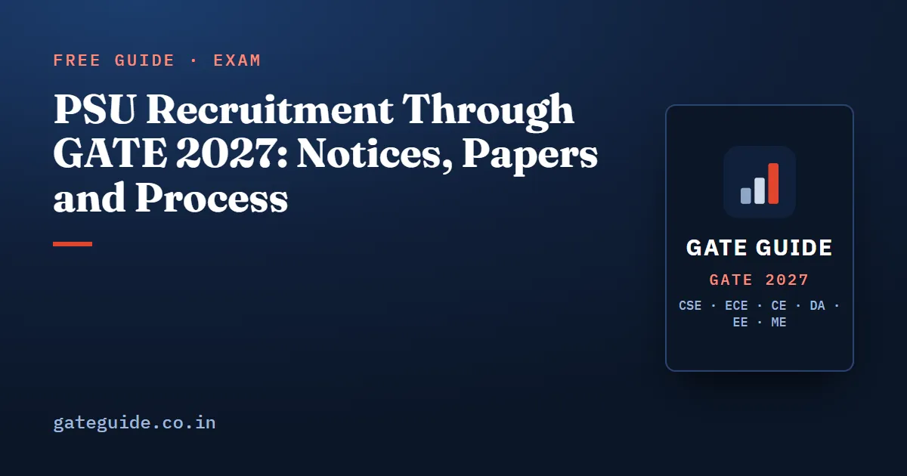

PSU Recruitment Through GATE 2027: Notices, Papers and Process

PSU recruitment through GATE 2027 has already started on paper. By 10 October 2026, POWERGRID, NTPC and GAIL had each published an advance notice saying they will hire graduate engineers on GATE 2027 marks, and two of them include computer science. This guide explains how PSU hiring through GATE works, what those official notices say paper by paper, and which clauses decide whether your score counts at all.
In this guide
- Key takeaways
- Four terms to fix first
- How a PSU hires through GATE, step by step
- The GATE 2027 notices published so far
- What the GATE 2026 cycle looked like
- Pay and bond come from the notice
- The official list, and what it does not promise
- The clauses that reject more candidates than the score
- What to do before the result
- Quick revision
Key takeaways
- GATE does not recruit. Each public sector undertaking (PSU) publishes its own notice, takes its own applications and runs its own selection.
- Three GATE 2027 notices were live on 10 October 2026: POWERGRID (EE, CE, CS, EC), NTPC (CE, ME, EE, EC, IN, CS) and GAIL (CH, IN, EE, ME).
- For GATE CSE government jobs, POWERGRID and NTPC name the CS paper; GAIL does not.
- GAIL and NTPC accept only GATE 2027 marks for these drives, even though a scorecard is valid for three years.
- Shortlisting runs on your marks in the "corresponding paper". Later stages, pay and bond are set by each notice.
Four terms to fix first
A notice (or advertisement) is the PSU's own document announcing posts. It usually arrives in two parts: an advance notice before GATE, and a detailed notification with vacancies after the result.
The corresponding paper is the GATE paper a PSU links to a post. POWERGRID's Engineer Trainee (Computer Science), for example, corresponds to the CS paper. Marks in any other paper do not count for that post.
Shortlisting is the PSU calling a set number of candidates, in order of GATE marks within each category, to its next stage.
The accepted GATE year is the year of GATE the notice will consider. It is stated in every notice, and it is often only one year.
How a PSU hires through GATE, step by step
- Register for GATE in the right paper. The PSU's table of corresponding papers decides this, not your branch name.
- Write GATE and qualify. POWERGRID's notice says the qualifying marks are those declared by the GATE organising body.
- Apply separately on the PSU's portal when its window opens, quoting your GATE registration number. There is often a fee.
- Get shortlisted on GATE marks within your discipline and category.
- Clear the later stages the notice lists, such as group discussion, personal interview, document verification and a medical examination.
- Final merit combines the stages using the weights in the notice.
How the weights combine
POWERGRID's Engineer Trainee 2026 notice used GATE 2026 marks out of 100 in the corresponding paper, then a group discussion and a personal interview. The final score weighted them like this:
Here is your GATE marks out of 100, and and are your group discussion and interview results as percentages.
Take made-up numbers: GATE marks of 62, a group discussion of 60% and an interview of 70%. The final score is . The GATE part supplies 52.7 of the 62.9.
In one line: In this notice, GATE marks carried 85% of the final score, so the exam decides most of the job before you ever reach the interview room.
The GATE 2027 notices published so far
Each row below is taken from the PSU's own website on 10 October 2026.
| PSU | Notice | Post | GATE 2027 papers | Application window |
|---|---|---|---|---|
| POWERGRID | CC/03/2026, dated 24.09.2026 | Engineer Trainee | EE, CE, CS, EC | March or April 2027 (tentative) |
| NTPC | Advt. 11/26, posted 14.08.2026 | Engineering Executive Trainee | CE, ME, EE, EC, IN, CS | Detailed notice to follow |
| GAIL | GAIL/OPEN/ET/1/2026 | Executive Trainee | CH, IN, EE, ME | 17.02.2027 to 18.03.2027 |
POWERGRID calls its disciplines tentative and says vacancies, reservation and the selection process will come in a later notification. NTPC says the requirements may change. Treat the table as the plan on 10 October 2026, not as final.
Trap: Applying for GATE is not applying to a PSU. Every one of these organisations needs a separate online application on its own website, inside its own window.
What the GATE 2026 cycle looked like
The 2026 cycle shows how these notices play out. POWERGRID's Engineer Trainee 2026 drive, notice CC/04/2025 dated 27.09.2025, took the EE, EC, CE and CS papers of GATE 2026. Shortlisting for the group discussion and interview ran on normalised GATE 2026 marks out of 100, category by category.
GAIL ran Executive Trainee recruitment through GATE 2026. Its official FAQ said only the GATE 2026 score was valid, that GATE 2026 marks would be used for shortlisting, and that the further selection would be a group discussion and/or interview.
NTPC shows why the year in the title matters. Its Engineering Executive Trainee 2025 drive used GATE 2025, yet its application closed on 25 February 2026. The batch name, the GATE year and the calendar year can all differ.
Some recruitment also runs through COAP, the portal IITs use for M.Tech offers. COAP 2026 lists one PSU, NPCIL, among its participants, alongside the institutes.
Pay and bond come from the notice
Salary figures circulate widely, but only the notice is evidence. POWERGRID's GATE 2027 notice states a basic pay of ₹40,000 during the one-year training, in the scale ₹40,000-3%-1,40,000 (IDA). It gives an approximate cost to company of ₹11.00 lakh a year during training and ₹22.50 lakh after it, varying with posting.
The same notice asks selected candidates to sign a service agreement bond. It covers the training and at least three years of service after it: ₹5,00,000 for General, OBC (NCL) and EWS candidates and ₹2,50,000 for SC, ST and PwBD candidates. Read the bond clause before you accept any offer.
The official list, and what it does not promise
The GATE 2027 brochure says that during the past few years PSUs including AAI, BHEL, BSNL, CIL, CRIS, ECIL, EIL, GAIL, IOCL, NHAI, NPCIL, NTPC, ONGC, POWERGRID, RINL and SAIL have used GATE scores in recruitment. It also says GATE qualification does not assure a PSU job.
That list is history. It does not say who will recruit in 2027 or in which papers. Only each organisation's notice settles that. PSU recruitment through GATE CSE shows how to read a notice line by line.
The clauses that reject more candidates than the score
These come straight from the 2027 notices above, and they vary from PSU to PSU.
| Clause | POWERGRID 2027 | GAIL 2027 |
|---|---|---|
| Upper age | 28 years on 31.03.2027 | 26 years on 18.03.2027 |
| Degree marks | 60% or equivalent CGPA | 65% (60% for SC/ST/PwBD on reserved posts) |
| Year of degree | Final-year students eligible with results by 31.08.2027 | Graduates of 2025 or earlier not eligible |
| Accepted GATE year | GATE 2027 | GATE 2027 only |
Check these before February. A candidate who misses an age or marks clause is out, whatever the GATE score.
Remember: The notice decides everything after GATE: the paper, the year, the age, the marks and the weights. Read the notice, not a list.
What to do before the result
Make sure your GATE 2027 paper matches the corresponding paper of the posts you want; fees and deadlines are in GATE 2027 registration and application fee. The exams run in February and the result is due on 19 March 2027, as set out in GATE 2027 exam dates.
Then aim well above the qualifying mark. Shortlisting runs on marks within a large cohort, and GATE CSE qualifying marks and cutoffs shows why qualifying alone is far from enough. Marks, in turn, come from depth in the subjects your paper rewards. Each GATE 2027 book on this site analyses its own paper's past questions with worked solutions and full mock tests; see the books for every branch.
GATE Guide is an independent site and is not connected to IIT Madras, the GATE office or any recruiting organisation. Confirm every detail on the PSU's own website and on the official GATE 2027 website.
Quick revision
- GATE gives a score; each PSU recruits under its own notice and portal.
- GATE 2027 notices by 10 October 2026: POWERGRID, NTPC and GAIL.
- CS candidates: POWERGRID and NTPC name the CS paper; GAIL does not.
- Only the corresponding paper counts for a post.
- GAIL and NTPC accept only GATE 2027 marks for these drives.
- POWERGRID 2026 weighted GATE 85%, group discussion 3%, interview 12%.
- Age, degree marks and year of graduation can disqualify you before the score is read.
- Pay, bond and vacancies are evidence only when they come from the notice itself.
Frequently asked questions
Which PSUs are recruiting through GATE 2027?
By 10 October 2026, POWERGRID, NTPC and GAIL had published advance notices on their own websites saying they will use GATE 2027. POWERGRID names the EE, CE, CS and EC papers, NTPC names CE, ME, EE, EC, IN and CS, and GAIL names CH, IN, EE and ME. Others usually announce later, so keep checking.
Can a GATE CSE candidate get a PSU job?
Yes, where a notice opens a computer science post. Among the GATE 2027 notices published so far, POWERGRID lists Engineer Trainee (Computer Science) against the CS paper, and NTPC lists Computer Science and Information Technology among its Engineering Executive Trainee disciplines. GAIL's notice does not include CS.
Do I apply to PSUs through the GATE application?
No. The GATE form only registers you for the exam. Each PSU opens its own online application on its own careers page, usually after the GATE result, and asks for your GATE registration number. GAIL, for example, says its link opens from 17 February to 18 March 2027.
Can I use my GATE 2026 score for PSU jobs in 2027?
Usually not for the notices published so far. GAIL states that only GATE 2027 marks are valid and NTPC states that GATE marks of previous years will not be accepted for its 2027 trainee recruitment. A GATE scorecard stays valid for three years, but each recruiter decides which years it accepts.
How much does GATE count in PSU selection?
It depends on the notice. POWERGRID's Engineer Trainee 2026 notice gave GATE 2026 marks 85 percent of the final score, group discussion 3 percent and personal interview 12 percent. Its 2027 notice says the selection process will be stated in a later notification, so read that before assuming the same split.
Sources
- GATE 2027 official website (IIT Madras)
- GATE 2027 Information Brochure, use of GATE score for employment (official PDF)
- GATE 2027 Opportunities: PSUs using GATE scores (official)
- POWERGRID job opportunities page (official)
- POWERGRID Engineer Trainee 2027 through GATE 2027, Advt. CC/03/2026 (official PDF)
- POWERGRID Engineer Trainee 2026 through GATE 2026, Advt. CC/04/2025 (official PDF)
- NTPC careers, Engineering Executive Trainees 2027 through GATE 2027, Advt. 11/26 (official)
- GAIL Executive Trainee through GATE 2027, Advt. GAIL/OPEN/ET/1/2026 (official PDF)
- GAIL Executive Trainee through GATE 2026, FAQs (official PDF)
- COAP 2026, Common Offer Acceptance Portal (IIT Roorkee, official)
Dates, fees and the syllabus are set by the GATE 2027 organising institute and can change. Always confirm at gate2027.iitm.ac.in.